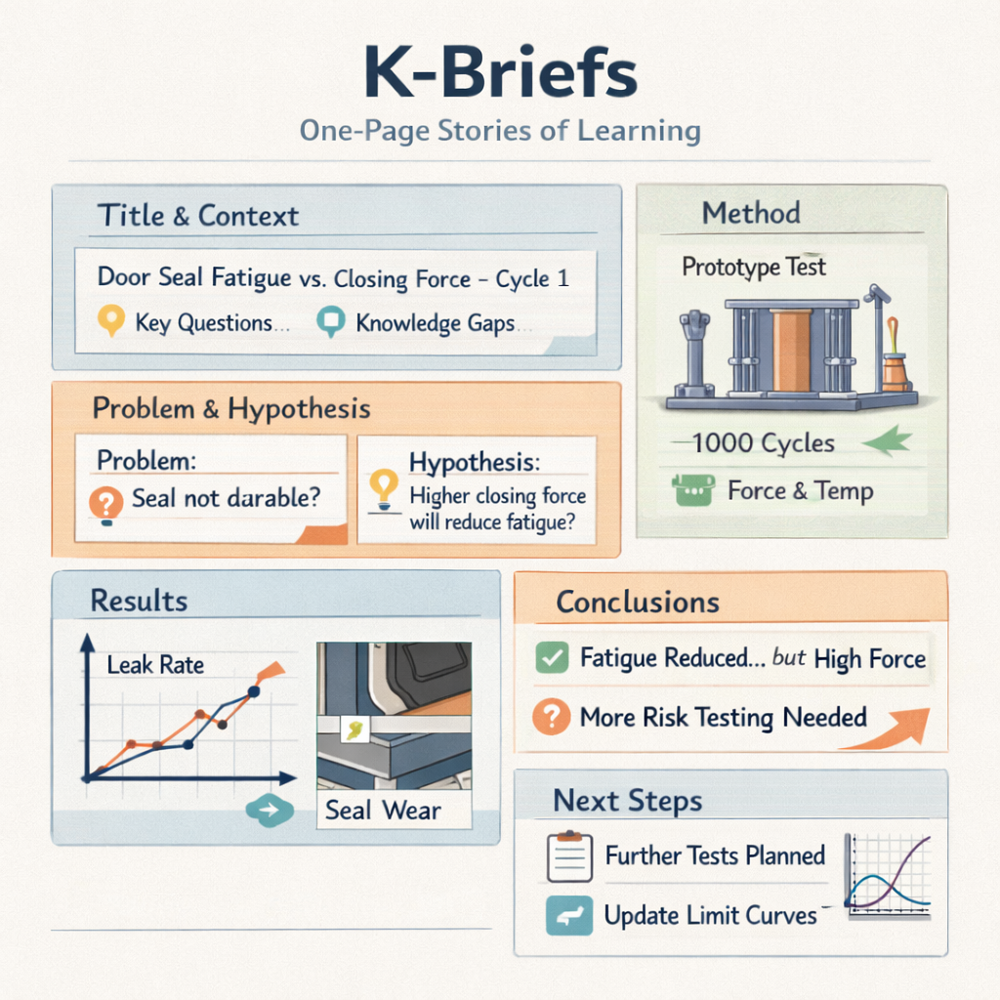
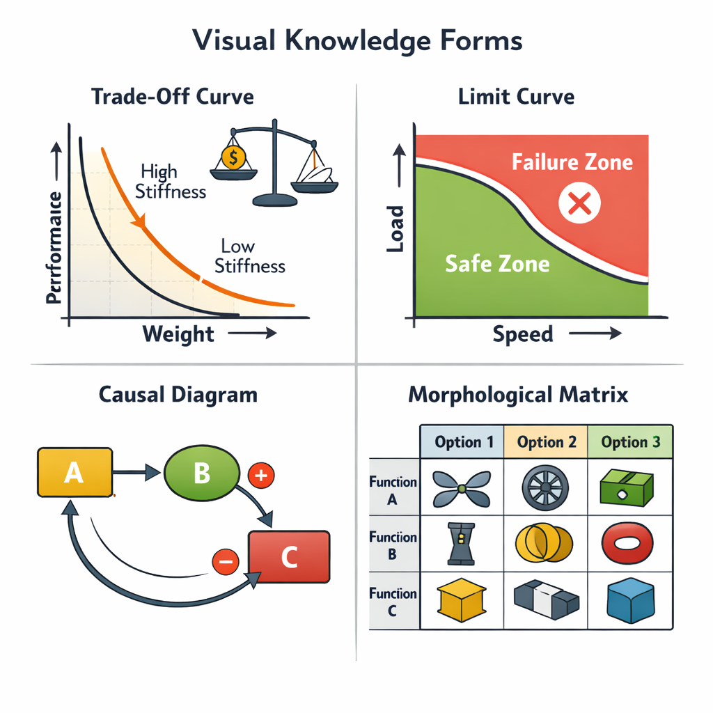
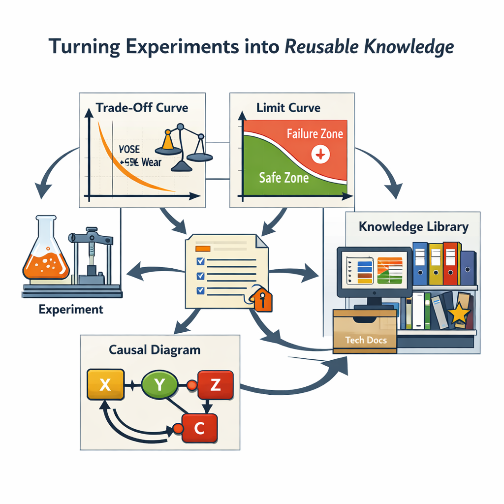

Section 22.1
K Briefs: One-Page Stories of Learning
A Knowledge Brief (K Brief) is a one-page A3 that captures a specific experiment, analysis, or insight. It is not a long report; its power comes from forcing clarity and focus on what mattered most.

Typical sections of a K Brief:
- Title and context — a short, specific title linking to the key decisions and knowledge gaps this brief supports.
- Problem and hypothesis — a clear problem statement (what you needed to know and why now) and a testable hypothesis.
- Method — what you tested, how you tested it, what you varied, what you held constant.
- Results — 1–3 graphs, photos, or simple tables showing the essential patterns, with emphasis on trends, limits, and surprises.
- Conclusions and implications — what you learned relative to the hypothesis, and the impact on the key decision.
- Next steps — follow-up experiments or analyses, and updates needed in trade-off curves, limit curves, or risk lists.
K Briefs are drafted during the cycle and refined just before integration events, not written weeks later. This keeps documentation close to the work and reduces the risk that important insights are lost or remembered vaguely.
Section 22.2
Visual Knowledge: Maps Instead of Slides
Some knowledge is best understood visually: how performance changes with conditions, where boundaries lie, and how variables interact. This is where visual knowledge comes in — diagrams and curves that show the shape of the design space.

- Trade-off curves — show how improving one dimension affects another (e.g., stiffness vs. weight, cost vs. performance).
- Limit curves — separate feasible from infeasible regions (e.g., combinations of load and speed beyond which failure occurs).
- Causal diagrams — show how variables influence each other and reveal feedback loops and side effects.
- Morphological matrices — show sets of options per function or subsystem and how they can be combined (used heavily in set-based design).
Visual knowledge makes it easier for teams to design to the physics and economics of the problem rather than to one favoured concept. It also makes reuse easier: a future engineer can understand the essence of past learning by looking at a handful of curves and diagrams instead of reading piles of reports.
Section 22.3
Turning Experiments into Reusable Knowledge
The bridge between experiments, K Briefs, and visual knowledge is intentional practice. For each important experiment:
- Ask: can this be expressed as a curve or diagram? Is there a trade-off to draw, a limit line that separates safe from unsafe?
- Update existing visual artefacts when new interactions, options, or failure modes are discovered.
- Link K Briefs to visual knowledge: each brief references the relevant curves, and visual artefacts in turn reference the briefs that support them.

“A simple rule of thumb: if you expect another team to face a similar question in the next 3–5 years, capture it visually and store it where they can find it.”
Over time, K Briefs and visual knowledge form a knowledge library: a shared space where briefs and visuals are stored with simple tags (product family, subsystem, technology, type of knowledge), a few “golden” examples highlighted as reference quality, and a habit of searching the library before starting new experiments.
For coaches and teams, this is where Lean Learning Cycles become strategic: you are no longer just fixing today’s project. You are building assets that make future developments faster, calmer, and more robust.